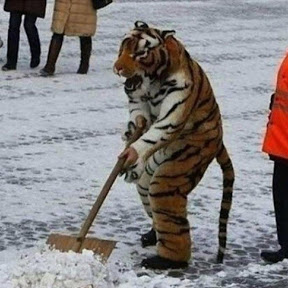

Along with being responsible for what goes on the radio, we're also responsible for video projects as well. Our biggest project ever was the Lip Dub. A Lip Dub is when we get footage of students dancing down the hall with other students around them. Then we dub over the footage with music.
So far, we have two Lip Dubs under our belt, the first has over 600,000 views! The other has about 7,000, but is expected to rise over time. Pretty good for a small town high school.
This is our first Lip Dub filmed in September of 2018
Here's our second, filmed in January 2020
Both made by Tiger Media, AKA Tiger Radio Youtube Channel!
Youtube Projects
Once every semester we are required to make Youtube videos. We do this to help our video editing skills. A lot of the members channels are very high quality. That's why we listed a few of them to give them some exposure.

Landshark Productions
Landshark productions is owned by Eli Rainey, Sophomore at HCHS. He makes short, very high quality videos about whatever comes to his mind. His favorite video is "The Eli Rainey Show EP 1 Finding the Zodiac Killer". Where you can also find several other members of Tiger Radio.
Abigale Morris
Abbie Morris is our student director in radio. That means she's in charge of almost everything. She chooses songs on the radio, and even had a big part in getting the Lip Dub off the ground. We are so proud of her. Her favorite video is Jesse Behind The Scenes. Fun Fact, Landshark Productions animated that video and can be found on his channel.

JG Shank
This channel is very special. It is owned by Jon Garret Shank (our teacher's son). He creates the most high quality videos of anyone in Tiger Radio. It is currently unknown what his favorite video is... but all of them are really good and worth checking out.

Sammy Boy
This channel is owned by Sam Gray. Sophomore at HCHS. Sam's videos are important because they show the average person what life is like at HCHS, and even Hardin County as a whole. It is unknown what his favorite video is, but I would guess that it's the one where he and Will review the bathrooms.
Will Forester
This channel is owned by... you guessed it, Will Forester. Will is a sophomore at HCHS and mostly makes videos about the sillier side of HCHS. He has a video series where he collects quotes from several people in different locations. (Maybe, I didn't watch the videos because my headphones broke.)
This is only a taste of what our YouTube channels have to offer! If you go search enough you can probably find a ton of other channels by Tiger Radio Students. Most of them aren't as quality... but you what you get.